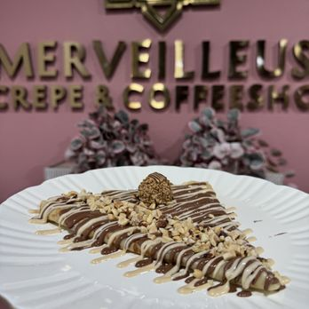
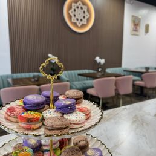
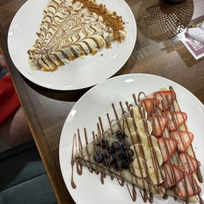
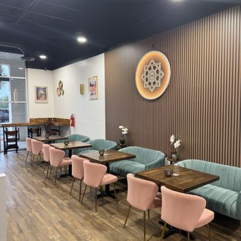
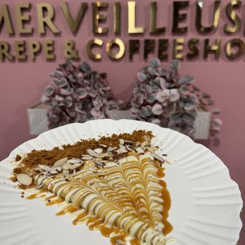
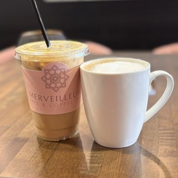
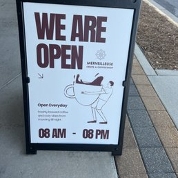
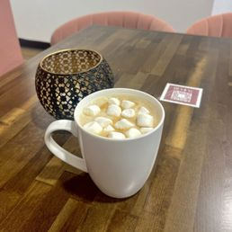
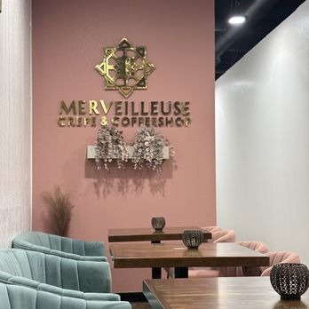

L'Art de la Table
A visual journey through our artisanal kitchen. From the delicate fold of a fresh crepe to the precise bloom of our morning espresso, every detail is crafted with intention.
All
Crepes
Coffee
Interior
Seasonal

The Signature Strawberry Galette

Morning Ritual





"Cuisine is the bridge between the earth and the soul."— Chef Merveille



